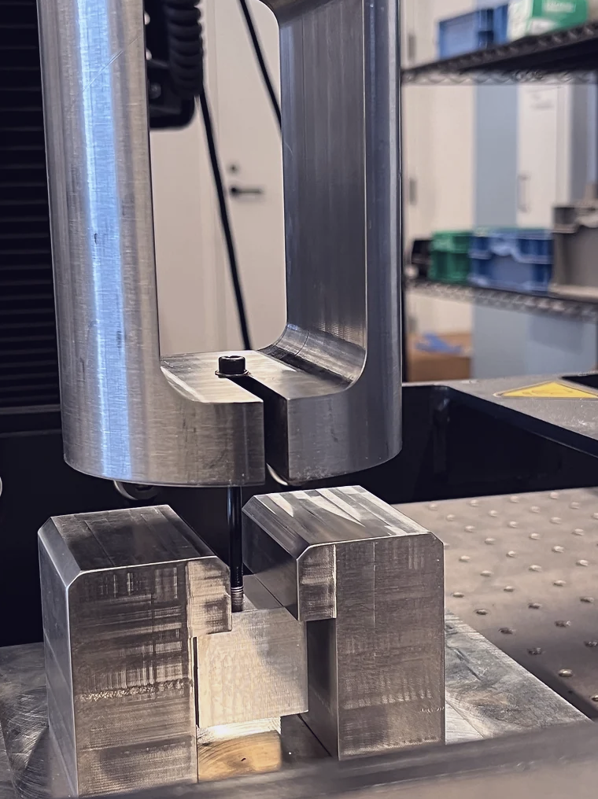

During my summer internship at Cruise, I designed and implemented a comprehensive tensile strength testing system for evaluating screw inserts across various materials and configurations. This project involved creating a custom CAD design for the test fixtures, running FEA simulations, and conducting physical tests. Python scripts were developed to analyze and visualize the data, resulting in a robust dataset that provided critical insights into material performance for in-house reference. Learn More
Tensile Strength Testing Fixture
